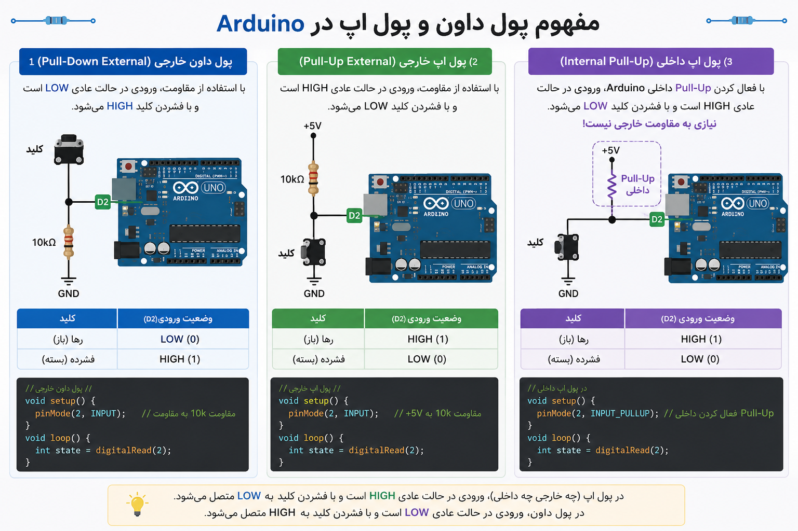

Project 05 — Fire Alarm System: Smoke Detection with MQ-2¶
1. What Are We Building?¶
We will build a fire and smoke alarm system that:
- Continuously reads the air quality using an MQ-2 gas/smoke sensor
- Shows green light when air is clean (normal state)
- Switches to red light + buzzer alarm when smoke or gas is detected
- Keeps the alarm active until a reset button is pressed
- Prints live sensor readings to the Serial Monitor for debugging and calibration
This is a real-world system. Variations of this exact circuit are used in home smoke detectors, industrial gas monitors, and air quality stations.
2. What Will You Learn?¶
By the end of this project you will be able to:
- Explain how the MQ-2 sensor works and what it detects
- Use
analogRead()to read a sensor and compare it to a threshold - Use
tone()andnoTone()to generate sounds with a buzzer - Build a simple two-state system: NORMAL and ALARM
- Use a latch (alarm lock) so the alarm stays on until manually reset
- Apply sensor calibration: finding the right threshold for your environment
- Combine multiple inputs and outputs in a single, coordinated sketch
3. Components Needed¶
| Quantity | Component | Notes |
|---|---|---|
| 1 | Arduino Uno | Any compatible clone |
| 1 | MQ-2 Gas / Smoke Sensor module | The module version (with breakout board) is easiest |
| 1 | Red LED | Alarm indicator |
| 1 | Green LED | Normal / standby indicator |
| 1 | Buzzer (passive) | Must be passive for tone() to work |
| 1 | Push button | Reset / silence button |
| 2 | 220 Ω resistors | One for each LED |
| 1 | 10 kΩ resistor | Pull-down for the button |
| 1 | Breadboard | Half-size or full-size |
| Several | Jumper wires | |
| 1 | USB cable |
Active vs. Passive Buzzer — What Is the Difference?¶
| Type | How It Works | Controlled By | Sound |
|---|---|---|---|
| Active buzzer | Has internal oscillator, beeps at fixed frequency | digitalWrite() HIGH/LOW |
One fixed tone |
| Passive buzzer | Just a speaker element, no oscillator | tone(pin, frequency) |
Any frequency you choose |
We use a passive buzzer in this project so we can vary the alarm frequency — a rising tone sounds more urgent than a flat beep. If you only have an active buzzer, replace
tone()/noTone()withdigitalWrite()HIGH / LOW.
4. Key Concepts¶
4.1 How the MQ-2 Sensor Works¶
The MQ-2 is a metal oxide semiconductor (MOS) gas sensor. Inside it, a small heating element raises a tin dioxide (SnO₂) layer to a high temperature. In clean air, this material has a high electrical resistance. When smoke, LPG, methane, or other gases are present, they react with the surface and lower the resistance.
The module converts this resistance change into a voltage that Arduino reads.
The MQ-2 detects:
| Gas / Substance | Common Source |
|---|---|
| Smoke | Fire, cigarettes |
| LPG | Gas cylinders, leaks |
| Methane (CH₄) | Natural gas, biogas |
| Propane | Camping gas, lighters |
| Hydrogen | Batteries, chemical labs |
| Alcohol vapors | Solvents, ethanol |
⚠️ The MQ-2 does not detect CO₂ (carbon dioxide). For fire detection specifically, it responds best to smoke particles and combustion byproducts.
4.2 The MQ-2 Module Pinout¶
The breakout board version has 4 pins:
| Pin | Function | Connect To |
|---|---|---|
| VCC | Power | Arduino 5V |
| GND | Ground | Arduino GND |
| AO (Analog Out) | Analog voltage (0–5V) | Arduino A0 |
| DO (Digital Out) | HIGH/LOW based on onboard threshold pot | Not used in this project |
We use the AO pin because it gives us the full range of sensor readings (0–1023). The DO pin gives only a simple HIGH/LOW and is less flexible.
4.3 Warm-Up Time¶
The MQ-2 requires a heating element to reach operating temperature.
- First-time use: allow 24–48 hours of burn-in for best accuracy
- Each power-on: allow at least 60–120 seconds of warm-up before readings are reliable
During warm-up, readings will be unstable and often falsely high.
In our code, we will add a short warm-up delay at startup and print a message to the Serial Monitor so the user knows to wait.
4.4 Threshold-Based Decision Making¶
Our alarm decision is simple:
This is a threshold comparator — one of the most common patterns in embedded systems and control engineering.
Choosing the right threshold is called calibration and is covered in Section 8.
4.5 The Alarm Latch¶
In a real alarm system, the alarm should stay on even if the smoke briefly clears — until a human confirms the situation is safe and manually resets it.
We implement this with a boolean latch variable:
bool alarmActive = false; // starts OFF
// To trigger:
if (sensorValue >= THRESHOLD) {
alarmActive = true; // latch ON
}
// To reset (only via button):
if (buttonPressed) {
alarmActive = false; // latch OFF
}
Once alarmActive becomes true, it stays true until the reset button is pressed —
regardless of whether the sensor still reads smoke.
4.6 tone() and noTone()¶
These are built-in Arduino functions for generating sound with a passive buzzer:
tone(pin, frequency); // Start playing a tone at given frequency (Hz)
tone(pin, frequency, duration);// Play for a specific duration (ms), then stop
noTone(pin); // Stop playing
| Frequency | Sound |
|---|---|
| 262 Hz | Middle C (musical note) |
| 1000 Hz | Mid-range beep |
| 2000 Hz | Higher-pitched alarm |
| 4000 Hz | High-pitched, attention-grabbing |
Human hearing range: approximately 20 Hz – 20,000 Hz. For alarms, frequencies between 1000–4000 Hz are most effective.
5. Hardware Setup¶
Circuit Description¶
Component Arduino Pin
─────────────────────────────────
MQ-2 VCC ───── 5V
MQ-2 GND ───── GND
MQ-2 AO ───── A0
Red LED ───── [220Ω] ──── Pin 8 (anode)
└────────────── GND (cathode)
Green LED ───── [220Ω] ──── Pin 7 (anode)
└────────────── GND (cathode)
Buzzer (+) ───── Pin 9
Buzzer (–) ───── GND
Button leg1 ───── Pin 2
Button leg2 ───── GND
also ─ [10kΩ] ─── 5V (pull-down — see note below)
Button Wiring: Pull-Down Resistor¶

We wire the button with a pull-down resistor (10 kΩ to 5V):
- Button not pressed → Pin 2 reads LOW (connected to GND through resistor)
- Button pressed → Pin 2 reads HIGH (connected directly to 5V)
This is the opposite of INPUT_PULLUP (used in Project 02). Either approach works —
what matters is knowing which state means "pressed" in your code.
Why not just connect button to 5V with no resistor?
Without a resistor, when the button is not pressed, pin 2 is floating — it picks up electrical noise and reads random HIGH/LOW values. The pull-down resistor keeps it firmly at LOW when released.
MQ-2 Warm-Up LED Indicator¶
During the warm-up period, we will blink the green LED slowly to signal to the user that the system is initializing. Solid green means the system is ready.
6. The Code¶
Version 1 — Basic Threshold Alarm¶
// ── Pin Definitions ──────────────────────────────────────────
const int SMOKE_PIN = A0; // MQ-2 analog output
const int RED_LED = 8; // Alarm LED
const int GREEN_LED = 7; // Normal / standby LED
const int BUZZER_PIN = 9; // Passive buzzer
const int RESET_BTN = 2; // Reset button
// ── Alarm Threshold ──────────────────────────────────────────
// 0–1023 range. Adjust this value during calibration (see Section 8).
const int THRESHOLD = 400;
// ── Warm-up Time ─────────────────────────────────────────────
const int WARMUP_SEC = 60; // Seconds to wait for sensor to stabilize
void setup() {
pinMode(RED_LED, OUTPUT);
pinMode(GREEN_LED, OUTPUT);
pinMode(BUZZER_PIN, OUTPUT);
pinMode(RESET_BTN, INPUT); // Pull-down wiring: HIGH = pressed
Serial.begin(9600);
Serial.println("MQ-2 Fire Alarm System — Starting up...");
// ── Warm-up sequence ─────────────────────────────────────
Serial.print("Warming up sensor (");
Serial.print(WARMUP_SEC);
Serial.println(" seconds)...");
for (int i = 0; i < WARMUP_SEC; i++) {
digitalWrite(GREEN_LED, HIGH);
delay(500);
digitalWrite(GREEN_LED, LOW);
delay(500);
Serial.print(WARMUP_SEC - i);
Serial.println(" seconds remaining...");
}
digitalWrite(GREEN_LED, HIGH); // Solid green: system ready
Serial.println("System READY. Monitoring...");
}
void loop() {
int sensorValue = analogRead(SMOKE_PIN);
int btnState = digitalRead(RESET_BTN);
// ── Print reading to Serial Monitor ──────────────────────
Serial.print("Smoke level: ");
Serial.print(sensorValue);
Serial.print(" / 1023 | Threshold: ");
Serial.println(THRESHOLD);
// ── Alarm Trigger ─────────────────────────────────────────
if (sensorValue >= THRESHOLD) {
// ALARM STATE
digitalWrite(GREEN_LED, LOW);
digitalWrite(RED_LED, HIGH);
tone(BUZZER_PIN, 2000); // 2000 Hz alarm tone
Serial.println("!!! SMOKE DETECTED — ALARM ACTIVE !!!");
} else {
// NORMAL STATE
digitalWrite(RED_LED, LOW);
digitalWrite(GREEN_LED, HIGH);
noTone(BUZZER_PIN);
}
delay(500); // Read sensor every 500 ms
}
Version 2 — With Alarm Latch and Reset Button¶
// ── Pin Definitions ──────────────────────────────────────────
const int SMOKE_PIN = A0;
const int RED_LED = 8;
const int GREEN_LED = 7;
const int BUZZER_PIN = 9;
const int RESET_BTN = 2;
// ── Alarm Settings ────────────────────────────────────────────
const int THRESHOLD = 400;
const int ALARM_FREQ_LOW = 1500; // Hz — alternating tones for urgency
const int ALARM_FREQ_HIGH = 3000; // Hz
const int TONE_INTERVAL = 300; // ms between tone changes
const int WARMUP_SEC = 60;
// ── State Variable ────────────────────────────────────────────
bool alarmActive = false; // Latch: stays true until reset
bool toneToggle = false; // Alternates buzzer frequency
void setup() {
pinMode(RED_LED, OUTPUT);
pinMode(GREEN_LED, OUTPUT);
pinMode(BUZZER_PIN, OUTPUT);
pinMode(RESET_BTN, INPUT);
Serial.begin(9600);
Serial.println("=== MQ-2 Fire Alarm System ===");
Serial.println("Initializing...");
// Warm-up
for (int i = 0; i < WARMUP_SEC; i++) {
digitalWrite(GREEN_LED, HIGH); delay(500);
digitalWrite(GREEN_LED, LOW); delay(500);
}
digitalWrite(GREEN_LED, HIGH);
Serial.println("System READY.");
}
void loop() {
int sensorValue = analogRead(SMOKE_PIN);
int btnState = digitalRead(RESET_BTN);
// ── 1. Check reset button ─────────────────────────────────
if (btnState == HIGH && alarmActive) {
alarmActive = false;
noTone(BUZZER_PIN);
digitalWrite(RED_LED, LOW);
digitalWrite(GREEN_LED, HIGH);
Serial.println("Alarm RESET by user.");
delay(500); // Debounce
}
// ── 2. Check sensor ───────────────────────────────────────
if (sensorValue >= THRESHOLD) {
alarmActive = true; // Latch the alarm ON
}
// ── 3. Drive outputs based on state ──────────────────────
if (alarmActive) {
digitalWrite(GREEN_LED, LOW);
digitalWrite(RED_LED, HIGH);
// Alternate between two frequencies for a more urgent sound
toneToggle = !toneToggle;
if (toneToggle) {
tone(BUZZER_PIN, ALARM_FREQ_HIGH);
} else {
tone(BUZZER_PIN, ALARM_FREQ_LOW);
}
Serial.print("ALARM ACTIVE | Sensor: ");
Serial.println(sensorValue);
} else {
digitalWrite(RED_LED, LOW);
digitalWrite(GREEN_LED, HIGH);
noTone(BUZZER_PIN);
Serial.print("Normal | Sensor: ");
Serial.println(sensorValue);
}
delay(TONE_INTERVAL);
}
7. How the Code Works — Step by Step¶
System State Diagram¶
┌─────────────────────┐
Power ON ──────► │ WARM-UP STATE │
│ Green LED blinks │
│ 60 seconds │
└────────┬────────────┘
│ warm-up done
▼
┌─────────────────────┐
┌───► │ NORMAL STATE │ ◄─── Reset button pressed
│ │ Green LED solid │
│ │ Buzzer OFF │
│ └────────┬────────────┘
│ │ sensorValue ≥ THRESHOLD
│ ▼
│ ┌─────────────────────┐
│ │ ALARM STATE │
│ │ Red LED ON │
│ │ Buzzer alternating │
│ │ alarmActive = true │
└─────┤ (stays here until │
│ button pressed) │
└─────────────────────┘
Key Logic Explained¶
Why check the reset button BEFORE the sensor?
If we check the sensor first, and smoke is still present when the button is pressed, the alarm would immediately re-trigger on the same loop iteration. Checking reset first gives the user one clean loop cycle where the alarm is off.
Why is alarmActive a bool and not an int?
bool can only be true or false. This makes the code's intent clear —
it represents a state (alarm on/off), not a measurement. Using int would work
but is less readable and leaves room for accidental values like 2 or -1.
What does toneToggle = !toneToggle do?
The ! operator means logical NOT. It flips a boolean:
- If toneToggle was false, it becomes true
- If toneToggle was true, it becomes false
Every loop iteration, it switches between the two alarm frequencies, creating a two-tone alternating siren sound.
8. Calibrating the Sensor¶
Calibration is the process of finding the right threshold value for your specific environment. This step is essential — the correct threshold depends on:
- Your room's baseline air quality
- The age and condition of the sensor
- Altitude and humidity
- What exactly you want to detect (smoke vs. gas leak)
Step 1 — Measure Your Baseline¶
Upload Version 1 of the code with a very high threshold (e.g., THRESHOLD = 1000)
so the alarm never triggers. Open the Serial Monitor. Let the sensor warm up fully.
Note the readings in clean air — this is your baseline.
Typical baseline in clean indoor air: 50–200
Step 2 — Measure Triggered Readings¶
Carefully bring a small source of smoke near the sensor (e.g., briefly wave a freshly blown-out candle nearby). Note the peak readings.
Typical smoke reading: 300–700+
Step 3 — Set the Threshold¶
Set your threshold above the baseline but below the smoke reading. A common approach:
For example: baseline = 100, smoke peak = 500 → threshold = 100 + 200 = 300
Step 4 — Test and Adjust¶
Test the alarm with your chosen threshold. Adjust if you get: - False positives (alarm triggers without smoke) → increase threshold - Missed detections (alarm does not trigger with smoke) → decrease threshold
⚠️ Never test with actual fire. Use a blown-out candle, incense stick, or a small burst of aerosol spray held at a safe distance.
9. Exercises & Challenges¶
Exercise 1 — Read the Baseline ⭐¶
Without writing any alarm logic, write a sketch that:
- Reads the MQ-2 sensor every 500 ms
- Prints the raw value to the Serial Monitor
- Also prints "HIGH" or "LOW" depending on whether the value is above 400
Use this to observe your sensor's real baseline in your classroom environment.
Exercise 2 — Alert Levels ⭐⭐¶
Modify Version 2 to have three levels instead of two:
| Level | Sensor Value | Red LED | Green LED | Buzzer |
|---|---|---|---|---|
| Normal | < 300 | OFF | ON | Silent |
| Warning | 300–500 | Blinking | OFF | Slow beep (500 ms on/off) |
| Alarm | > 500 | ON | OFF | Continuous high tone |
Hint: Use else if to add the middle condition.
Exercise 3 — Buzzer Melody on Reset ⭐⭐¶
When the reset button is pressed and the alarm clears, play a short two-note confirmation melody (e.g., 1000 Hz for 100 ms, then 1500 Hz for 100 ms) before going silent.
Hint: Use tone(pin, freq, duration) with the duration argument.
Exercise 4 — Sensor Averaging ⭐⭐¶
A single noisy reading can cause false alarms. Instead of reading the sensor once, average 10 readings taken 10 ms apart:
int total = 0;
for (int i = 0; i < 10; i++) {
total += analogRead(SMOKE_PIN);
delay(10);
}
int avgValue = total / 10;
Replace sensorValue with avgValue in your alarm logic.
Does this make the system more or less sensitive to brief smoke puffs?
Exercise 5 — Alarm Duration Counter ⭐⭐⭐¶
Add a variable that counts how many seconds the alarm has been active. Print this to the Serial Monitor:
Hint: Increment a counter variable every loop iteration and multiply by TONE_INTERVAL / 1000.0.
Bonus Challenge — Percentage Display ⭐⭐⭐¶
The raw value (0–1023) is not intuitive. Use map() to convert it to a percentage:
Print the reading as:
Also draw a simple bar graph in the Serial Monitor using a loop that prints
one # character per 5% of reading.
10. Common Mistakes & Troubleshooting¶
Alarm Triggers Immediately at Power-On¶
| Possible Cause | Solution |
|---|---|
| Sensor not warmed up | Wait the full warm-up time before testing |
| Threshold too low | Increase THRESHOLD value; run Exercise 1 to measure your baseline |
| First-time sensor use | Allow 24–48 hours of burn-in; readings stabilize with use |
| Sensor near a heat source | Move it away from direct sunlight, hot air vents, or soldering stations |
Alarm Never Triggers Even with Smoke¶
| Possible Cause | Solution |
|---|---|
| AO pin not connected | Check wiring from MQ-2 AO to Arduino A0 |
| Threshold too high | Decrease THRESHOLD; observe Serial Monitor readings with smoke present |
| Using DO instead of AO | Make sure you are reading from the AO (analog) pin, not DO |
| Sensor defective or cold | Check if sensor heats up after a few seconds — the top should feel warm |
Reset Button Does Not Work¶
| Possible Cause | Solution |
|---|---|
| Button wired incorrectly | Check that one leg goes to Pin 2, the other to GND, and 10kΩ to 5V |
Code reads LOW as pressed |
With pull-down wiring, pressed = HIGH — verify the condition in if |
| Button bounce | Add delay(500) after detecting a button press |
| Alarm immediately re-triggers | Smoke is still present — the latch resets but sensor immediately re-latches |
Buzzer Makes No Sound¶
| Possible Cause | Solution |
|---|---|
Active buzzer used with tone() |
Active buzzers need digitalWrite(BUZZER_PIN, HIGH) — not tone() |
| Buzzer polarity wrong | Most buzzers have a (+) marking — connect to signal pin, (–) to GND |
| Wrong pin | Confirm BUZZER_PIN in code matches the physical pin |
noTone() called before sound plays |
Check that alarmActive is true when buzzer code runs |
Serial Monitor Shows Garbage Characters¶
| Possible Cause | Solution |
|---|---|
| Wrong baud rate | Set Serial Monitor baud rate to 9600 to match Serial.begin(9600) |
New Functions Introduced¶
| Function | Syntax | Purpose |
|---|---|---|
tone() |
tone(pin, frequency) |
Play a tone at given Hz on a passive buzzer |
tone() |
tone(pin, frequency, duration) |
Play tone for a set duration then stop |
noTone() |
noTone(pin) |
Stop the buzzer |
map() |
map(value, fromLow, fromHigh, toLow, toHigh) |
Re-scale a value to a new range |
Additional Resources¶